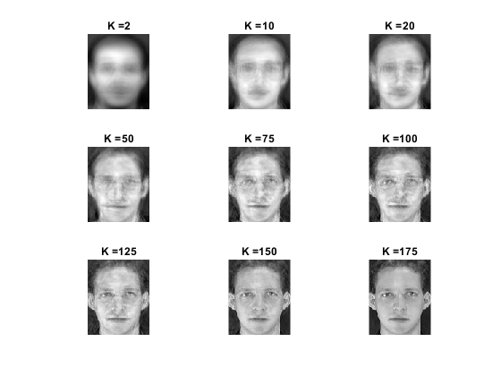
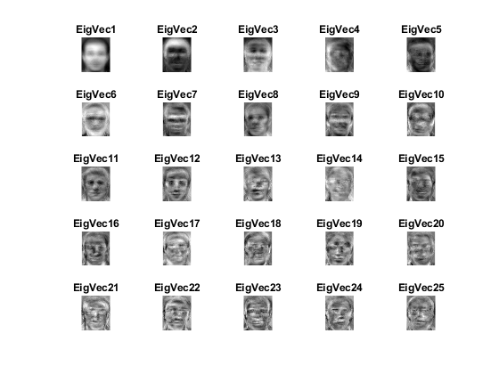

Contents
MyMainScript
tic;
Your code here
clear; kVals = [2 10 20 50 75 100 125 150 175];
Read Image
P = '../../1/att_faces/s'; count=1; recogRate = []; face_tag = strings(240,1); original_face_tag = strings(40,1); result = strings(40,1); train_mat = zeros([112*92 , 192]); for i=1:32 temp_D = strcat(P,int2str(i)); D = dir(fullfile(temp_D,'*.pgm')); for j=1:6 F = fullfile(temp_D,D(j).name); I = imread(F); % I = rgb2gray(I); I = im2double(I); train_mat(:,count) = I(:); face_tag(count) = strcat('s',int2str(i)); count=count+1; end end
Perform SVD
[M,U, new_mat] = svd_faceRec(train_mat);
Plot reconstruction of a face
pickedImag = train_mat(:,1) - M; figure; c = 1; for k=kVals Uk = U(:,1:k); % Generate Reconstruction coefficient coef = Uk' * pickedImag; % Change them back to the image space recos = (Uk * coef) + M; img = reshape(recos,[112,92]); subplot(3,3,c) c = c + 1; imshow(img,[]) title(strcat('K = ', int2str(k))) end
Plot Eigenface
Please see the actual images after plotting as these images in Report aren't resizable
figure; for idx=1:25 Uk = U(:,idx); img = reshape(Uk,[112,92]); subplot(5,5,idx) imshow(img,[]) title(strcat('EigVec ', int2str(idx))) end toc;
Elapsed time is 8.166572 seconds.